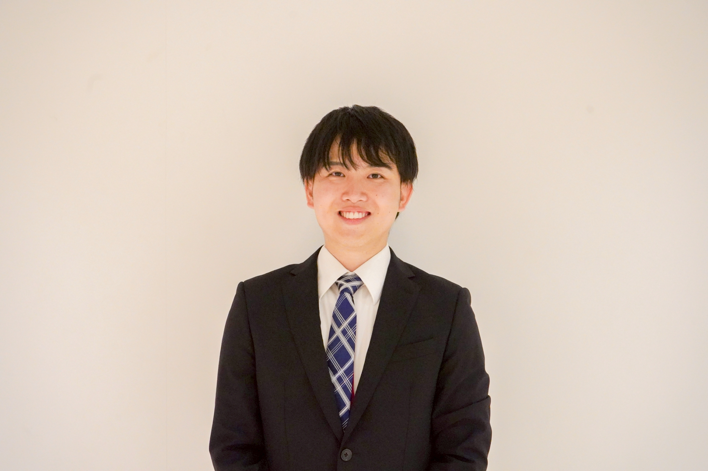
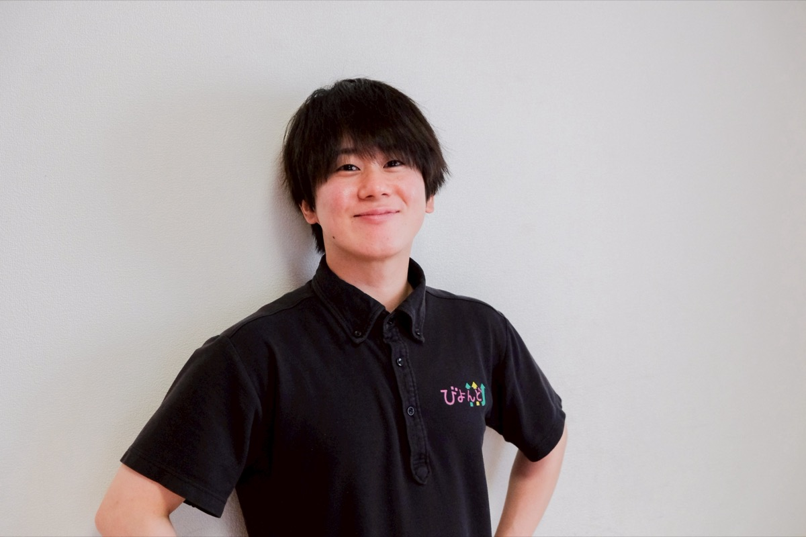

代表メッセージ

スタッフもご利用者も、
人生の主役。
私たちニューバリーは、障がいを持つ方々とその家族が、地域の中で安心して暮らしていける社会を目指しています。そして、支える側であるスタッフ一人ひとりの「想い」や暮らしも、同じくらい大切にしたいと考えています。
未経験でも、子育て中でも、自分のペースで。あなたらしい働き方で、一緒に地域の「支える」をつくっていきましょう。
数字で見るNewValley
（会社がサポート）
募集職種
児童指導員・指導員（放課後等デイ）
子どもたちの療育・活動支援を行います。今年の冬にオープンする新規事業所では資格をお持ちの方を正社員で募集。既存のマーチ・びよんど等でも募集中です。
相談支援専門員
現在、こちらの職種の募集は一時中断しています。再開の際は当ページにてお知らせいたします。
「短時間社員制度」もあります
勤務時間は短くても、正社員として働ける制度です。育児や家庭の状況に合わせて、無理なく働けます。
NewValleyで働く魅力
未経験でも安心
資格取得を会社が全力サポート。休日の研修にバイト代が支給されるので、費用ゼロで資格が取れます。
柔軟な働き方
短時間社員制度・シフト制・副業OKなど、自分のライフスタイルに合わせた働き方ができます。
しっかりした待遇
賞与年2回・各種手当・社会保険完備。資格取得で毎年昇給、頑張りをきちんと評価します。
長く働ける
20〜60代が活躍中。ライフステージが変わっても、働き方を変えながら長く続けられます。
スタッフインタビュー

Q. どんな時にやりがいを感じますか？
ご利用者様の「ありがとう」の一言が、何よりの励みです。生活に寄り添う中で、その方らしい暮らしを一緒につくれることに、大きなやりがいを感じています。

Q. 未経験からのスタートはいかがでしたか？
先輩が丁寧に教えてくれるので、不安はすぐになくなりました。資格も働きながら取得でき、少しずつできることが増えていく実感があります。

Q. 職場の雰囲気を教えてください。
スタッフ同士で話し合いながら支援を進めるので、風通しがとても良いです。子どもたちの成長を一緒に喜べる、あたたかいチームです。
※インタビュー内容は一例です。
応募の流れ
エントリー・LINEで相談
フォームまたはLINEから気軽にご連絡ください。「話だけ聞きたい」も大歓迎です。
カジュアル面談・職場見学
雰囲気を感じてから、ゆっくり考えてください。見学だけでもOKです。
面接・条件確認
希望の働き方・シフト・待遇など、一緒に確認しながら進めます。
内定・入社
入社後も研修・OJTでしっかりサポート。一緒に成長していきましょう！
よくある質問
未経験・無資格でも応募できますか？
子育て中でも働けますか？
どんな資格が活かせますか？
まずは見学・相談だけでも大丈夫ですか？
賞与や昇給はありますか？
まずは「話だけ」でも、大歓迎です。
LINEで気軽にメッセージください。
「自分でも働ける？」など、なんでも聞いてください。